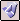
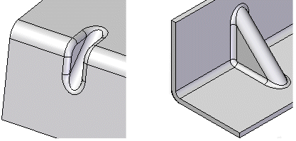

Gusset commandConstructs a stiffening gusset across a bend to provide reinforcement in a sheet metal part.

You can create a gusset automatically or from a user-drawn profile. You can use the Gusset Options dialog box to specify the method to use when constructing the gusset. The steps required to construct the gusset are different depending on the method you use.
Gussets are not displayed in the flat pattern representation or in drawing views of the flat pattern in the Draft environment. If the resident bend is removed, the gusset is also removed.
For more information on constructing gussets, see Adding sheet metal deformation features.
How do I
Construct a gussetEdit a gusset
Learn more
Constructing gussetsLook up more details
Gusset command barGusset command bar
Gusset Options dialog box